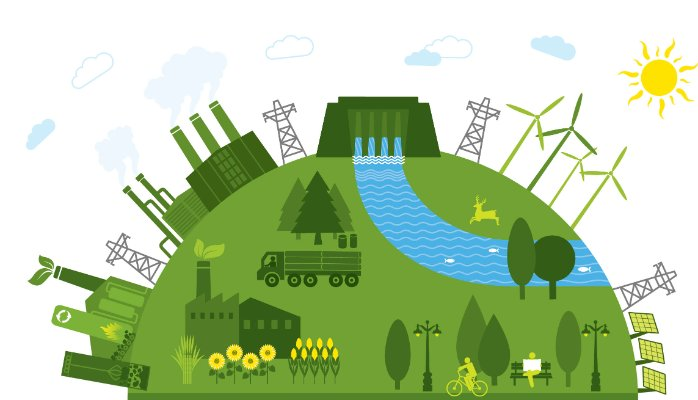
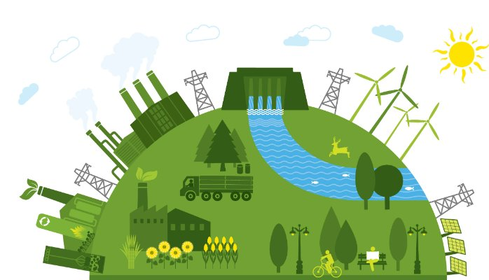

¿Qué es una ciudad sostenible y qué características se requieren para ser sostenible?
Una ciudad sostenible es aquella que busca equilibrar el desarrollo económico, la equidad social y la protección del medio ambiente de manera continua. En este modelo, se prioriza el uso eficiente de los recursos naturales y se promueve un estilo de vida urbano que garantice la calidad de vida de las generaciones presentes y futuras.
Características para ser sostenible:
- 1. Eficiencia energética en edificaciones y transporte.
- 2. Uso de energías renovables y tecnologías limpias.
- 3. Planificación urbana integrada y accesible.
- 4. Gestión adecuada de residuos y aguas.
- 5. Promoción de espacios verdes y biodiversidad urbana.
 
